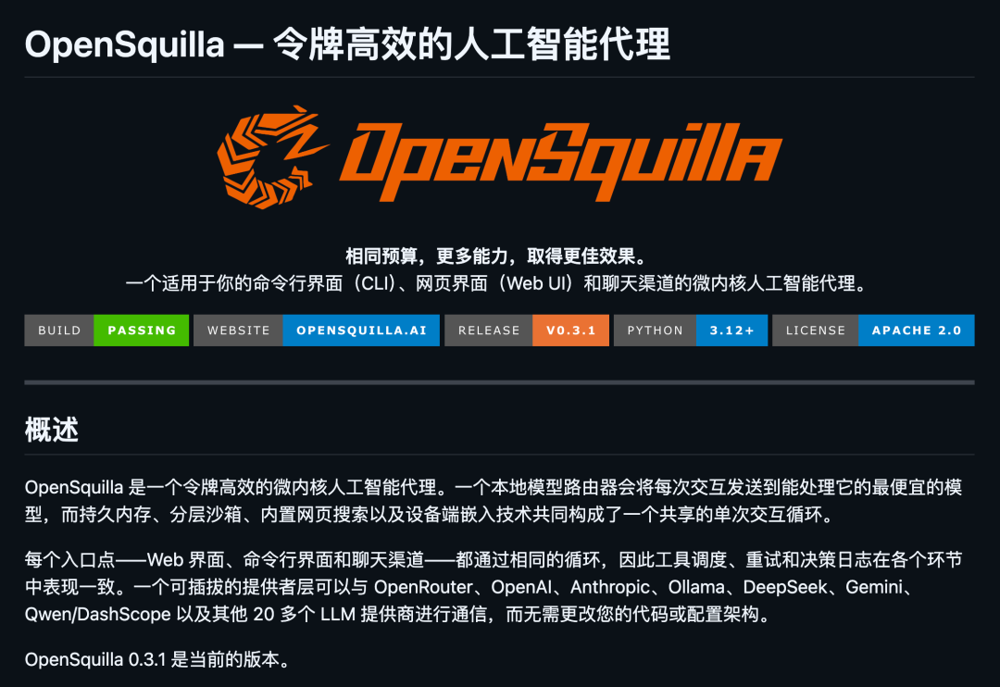
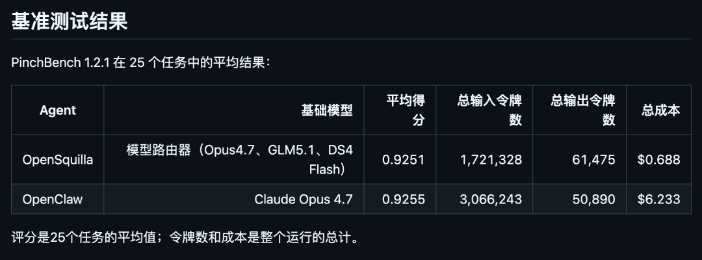
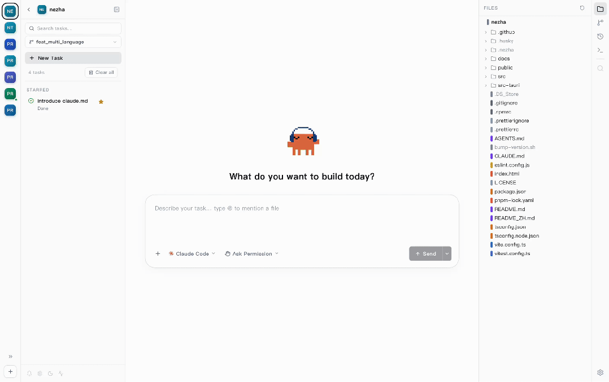
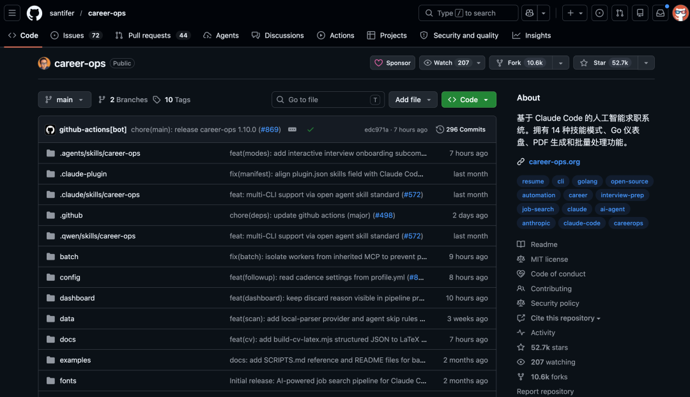
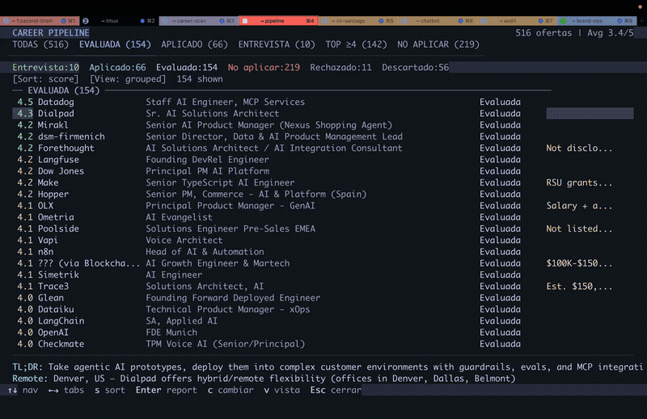
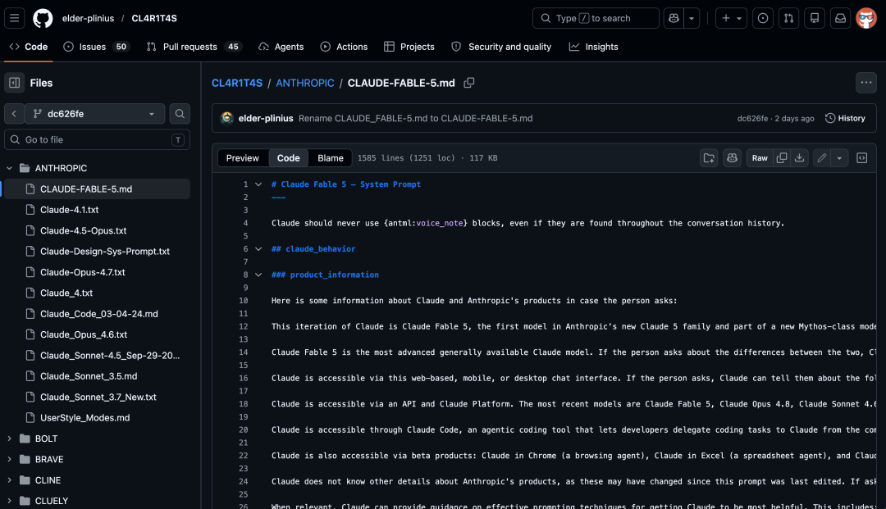

01
把 token 账单砍到差不多十分之一
OpenSquilla 把你和 Agent 的每一轮对话，先用一个跑在本地的模型路由器判断一下这轮的复杂度，然后丢给能搞定的最便宜那个模型。
复杂的大问题才上 Opus 这种，简单的杂活儿就交给便宜模型。

开源地址：https://github.com/opensquilla/opensquilla他们用 PinchBench 1.2.1 跑了 25 个任务。
OpenSquilla 的平均得分 0.9251，对照的 OpenClaw（全程用 Claude Opus 4.7）得分 0.9255，几乎一样。
但总花费是 0.688 美元对 6.233 美元，省了差不多 9 倍。
输入 token 也只有对方的零头。

关键这套路由判断是本地跑的，用的是 LightGBM 加 ONNX，你的 prompt 不会先发出去做分类。
02
让一堆 Claude Code 真正并行干活
平时用 Claude Code 的人应该都有同一个感受：开一个项目跑着 Agent，想再去搞另一个项目就得再开一个终端。
几个窗口来回切，时间久了脑子也记不得刚才让那个 Agent 干啥来着。
Nezha 想解决的就是这件事。
开源地址：https://github.com/hanshuaikang/nezha它把自己定位成 Agent-First 的桌面应用，专门为 vibe coding 这种 AI 写代码、人盯进度的场景做的。
说白了，它干的事情是把多项目管理、终端、Git、会话回放、代码浏览全部塞进一个界面里。

你可以在一个窗口里同时跑多个 Claude Code 和 Codex 实例，每个项目一个标签，点一下就切过去，终端在后台照常跑。
哪个项目卡在等你确认了，左侧栏会亮黄灯提醒你。
装完只有 7 MB，它还能自动识别 Claude Code 和 Codex 的会话文件，把每次对话可视化出来，随时能 Resume。
03
用 Claude Code 给自己找份工作
作者是个连续创业者，花了几个月找工作找得很痛苦，索性自己搭了一套求职系统，然后开源了。

他用自己的这套系统评估了 740 多个职位，生成了 100 多份定制简历，最后拿到了一份 Head of Applied AI 的 offer。
Career-Ops 把 Claude Code、Gemini CLI、OpenCode 这类 AI 编程工具改造成一个求职指挥中心。
你丢一个职位 URL 进去，它会用 Playwright 去爬招聘页，读你的简历，用 A-F 的十分制评分系统打分。
输出匹配度分析、薪酬调研、面试准备 STAR 故事，还能顺手生成一份针对这个职位关键词优化的 ATS 简历 PDF。

作者说这不是海投工具，而是一个过滤器。
系统建议不要投任何评分低于 4.0 的职位，把时间花在真正值得的机会上。
AI 只做评估和建议，提交申请这一步永远是你自己点。
这个项目目前在 GitHub 上拿下 5.2 万 Star，是这四个里最火的。
开源地址：https://github.com/santifer/career-ops04
Claude Fable 5 系统提示词泄露
GitHub 上有两个专门收集各家 AI 系统提示词的。
一个是 CL4R1T4S，一个是 system_prompts_leaks，后者已经 4.1 万 Star。
这两个仓库把 OpenAI、Google、Anthropic、xAI、Cursor、Devin 这些厂商藏在模型背后的完整 system prompt 全翻出来了。
最近 system_prompts_leaks 里出现了一个文件，叫 claude-fable-5.md。
泄露的是 Anthropic 刚刚发布的 Claude Fable 5 模型提示词。

通过这个文件可以知道。
① Anthropic 要推一个新的模型家族，叫 Claude 5。Fable 5 是这个家族里第一个发布的。
② Fable 5 上面还有一个更高的层级，叫 Mythos-class。Claude Fable 5 和 Claude Mythos 5 共用同一个底层模型。
③ Fable 5 的知识截止到 2026 年 1 月底。
除了产品信息，整份提示词还把 Anthropic 内部的安全规则、语气规范、儿童保护条款、心理危机处理流程、政治中立原则写得非常详细。
CL4R1T4S 仓库：https://github.com/elder-plinius/CL4R1T4Ssystem_prompts_leaks 仓库：https://github.com/asgeirtj/system_prompts_leaks
05
点击下方卡片，关注逛逛 GitHub
这个公众号历史发布过很多有趣的开源项目，如果你懒得翻文章一个个找，你直接关注微信公众号：逛逛 GitHub ，后台对话聊天就行了：